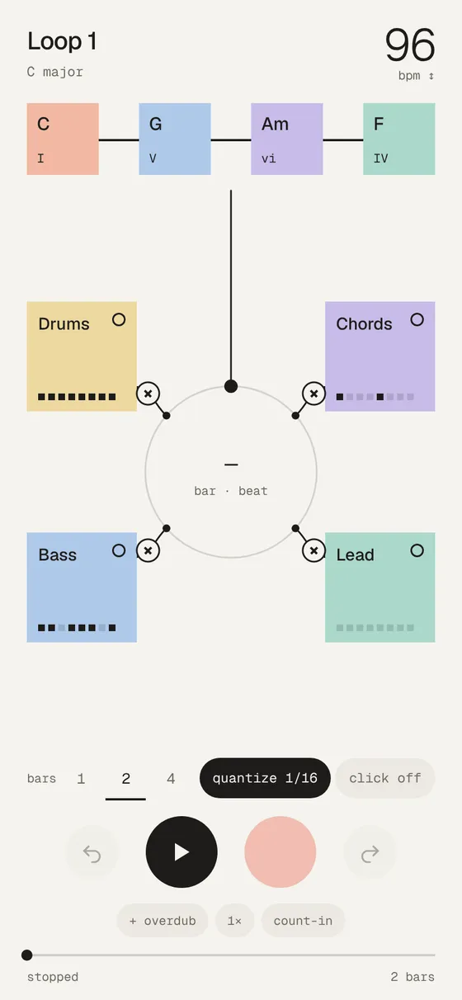
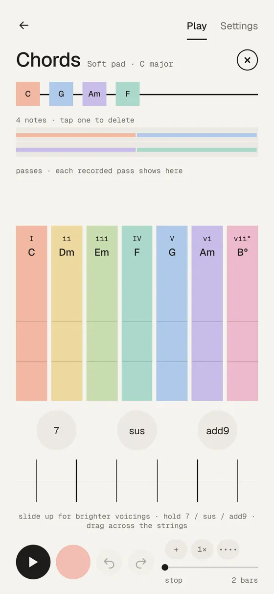

CGAmF
Loops on a string.
A touch-first loop maker for your phone. Drums, chords, bass and lead, all synthesized, all hanging off one ring.
Open OCTO

Drums
Write the beat as rules: which beats, where in the beat.
Chords
One column per chord in the key. Slide up for brighter voicings.
Bass
One string split into chord-tone zones that retune as chords change.
Lead
Magnetic scale bands, plus an arp orb that follows the chord.